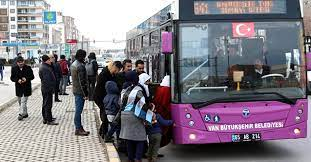
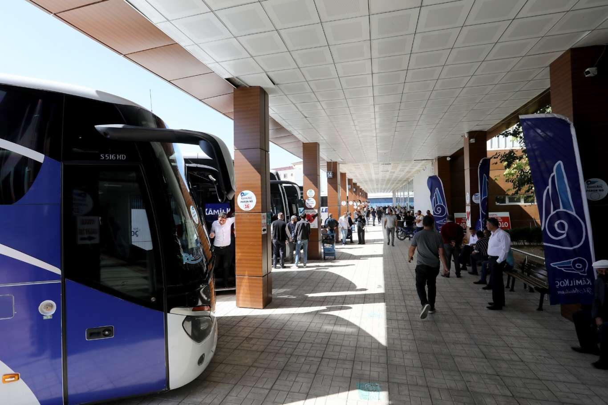

Van Şehri |
|
Ulaşım 
Doğu Anadolu Bölgesi'nin en kalabalık şehri olmasından dolayı Van'da şehir içi ulaşım ağı da oldukça gelişmiştir. Şehirde toplu ulaşım seçenekleri belediye otobüsü, minibüs ve özel halk otobüsleri şeklindedir. Halk otobüsü ve belediye otobüsü ile ulaşımı tercih eden yolcuların Belvan Kart satın alması gerekmektedir.  Ankara’dan Van’a ulaşım seçenekleri arasında Van Gölü Ekspresi de yer almaktadır. Ankara’dan her Salı ve Pazar, Tatvan’dan ise her Salı ve Perşembe sefer düzenlenmektedir. Yaklaşık olarak 25 saat süren yolculuğun güzergahı ise Ankara – Kayseri – Sivas – Malatya – Elazığ – Tatvan şeklinde gerçekleşmektedir. Pulman, örtülü kuşetli ve yataklı seçenekleri bulunan Van Gölü Ekspresi’nde bilet ücretleri 48 TL’den başlamaktadır. Yaş ve meslek indirimleri hakkında detaylı bilgi ise bilet gişelerinden alınmaktadır. Bu ulaşım seçeneğini tercih eden yolcular, Tatvan’a iniş yapmaktadır. Tatvan’dan Van’a otobüs ve feribot ile ulaşım sağlanmaktadır. |
Şehir Tarihçesi Yemekler Gezi Rehberi Ulaşım Duyurular Haberler İletişim |
| Bir Umut Furkan Berrak ürünüdür ©2022 | |